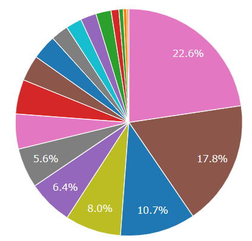
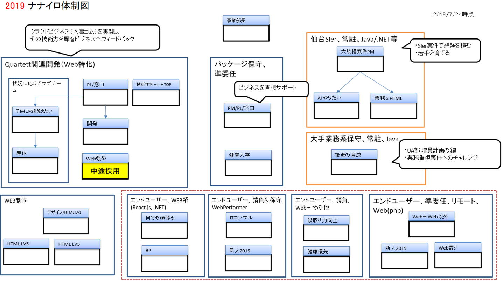

株式会社ナナイロはBIシステム構築、データ分析、Excel, Access, 超高速開発を得意分野とする仙台のソフトウェア企業です。
TEL. 022-200-9006
〒980-0014 宮城県仙台市青葉区本町2-3-10 仙台本町ビル
事業部概要CONCEPT
ナナイロは事業部制
ナナイロでは事業部制を採用しており、各事業部での独立採算方式となっております。
各事業部長の方針に従って事業部は運営され、それぞれに特色のある事業展開を行っております。
自分のビジネスモデルのイメージが描ければ、やる気次第で自分の事業部を持つことが可能な文化です。

ユーザーアプリケーション事業部
ユーザーアプリケーション事業部はデータベースを中核にした開発、ツールを使った開発を行っています。
ユーザーアプリケーション事業部はデータ入力〜活用までの全てを提供します。

| カテゴリ | 技術分野 | 適用範囲 |
|---|---|---|
| データベース | RDBMS - Oracle/SQLServer/MySQL DWH - Vertica/Oracle Autonomouse Datawarehouse |
DBチューニング DWH構築 |
| ユーザー向けツール | Excel / Access / Filemaker ※Excelによるデータ分析をテーマに県立大学にて 非常勤講師経験有 |
小規模アプリケーション構築 |
| BIツール | Dr.Sum/Cognos/Oracle/Qlikview/WebFOCUS | 大規模 BIシステム構築 |
| スマホアプリ | Monaca, Xamarin | どちらかと言うと 業務向け |
| ロボット＋AI | IBM Watson |
消費者向けアプリ |
| 各種スクラッチ開発 | php(Quartett(※)/cakePHP)/React.js/.NET/Java WebPerformer/kintone |
小〜大規模開発 |
| 昨今の動き | Oracle Cloud を高く評価しています。 ・AWSと比べてのコスト安 ・APEXによる超高生産性Webアプリ開発 |
クラウドでの 小〜大規模開発 BI/DWHシステム |
ユーザーアプリケーション事業部(UA)の特徴
UA部はいくつかの特徴があります。
１．契約スタイルが様々あります。
２．顧客が非常に多いです。
３．ナナイロのどの他事業部よりも大規模化を目指しています。
１．契約スタイルについて
・派遣契約（客先常駐）
ナナイロ単独では経験しづらい、比較的規模が大きな正攻法のシステム開発を客先にて経験させて
いただいています。社内だけではどうしても視野が狭まりがちですが、外部の方と一緒に仕事を
することで、様々な経験を積ませていただいています。
・受託開発（請負開発）/ 準委任契約（リモート開発）
小規模〜中規模の開発（１人月未満〜１０人月程度）を数人体制で回しております。
仙台のみならず、全国各地からお声がけいただいて開発を行っています。
（北海道、東京近辺、千葉鴨川、岐阜、熊本、新潟）
・自社開発（投資開発）
まだまだ小規模ですが、投資としての開発を行っています。
見守りロボット、社内業務改善（販売管理、給与明細、グループウェア）の実績があります。
２．顧客の多さについて
これまで支援させていただいたどのお客様からも支持をいただけているため、
ナナイロ側から積極的に営業行為を行わなくとも、定期的にシステム開発の相談をいただいております。
また、事業部の方針として、常に新規開拓、を心がけているため、徐々に新しいお付き合いをさせて
いただくお客様が増えています。
特定の顧客に依存することなく、どのお客様にも真摯に向き合うことで、相互に程よい緊張感が生まれ、
どのお客様とも対等の立場でシステム提案をさせていただいております。

↑2019年の顧客別売上
３．どの事業部よりも大規模化を目指す
2020.5時点では、全体が100名弱、全13事業部です。平均すると各事業部は7〜10名になります。
現在のUAは14名。（訳あって一緒にやってる他事業部等と合わせると23名）
採用のペースにもよりますが、UA部では5年程度で40名まで増員することを計画しています。
◯40名になるとできること
・年間を通して２〜3名程度は売上ゼロでも事業部が維持出来るため、大胆な投資が可能になります。
今は小規模な社内システム程度ですが、いずれドーンと行きます！
・経験を積んだSEが増えることで、大規模案件もこなせるようになります。
→より魅力的な案件が立ち上がることを期待しています。

黒歴史の数々（笑）
失敗の連続ではありますが、いくつかの持ち出し開発を行っています。仙台型の企業ではチャレンジすらできない体質の会社も少なくないので、チャレンジできることは非常に恵まれている、と考えています。
成功するまで続ける覚悟です。
| アプリ名 | 概要 |
|---|---|
| 電子地域連絡ノート | ・全く出来ていなかったのに、もう出来ているんでしょ？と大手SIerさんから引き合いがあり、 開発が始まったWebアプリ。 ・大変ご迷惑もお掛けしてしまいましたが、ある医師会での導入コンペで検討いただくところまでは行きました。（その後は力尽きました） |
| 見守りアプリ | ・医療生協様から相談があり、開発が始まったシステム。 ・T芝さんの未発表のロボットをお借りしたり、シャープロボホンの開発パートナーになったり、紆余曲折。 ・北海道の介護事業所様での試験導入検討まで漕ぎ着けましたが、千葉、神戸の事業所様からは完全にダメ出しされ、力尽きました… |
| 社内販売管理システム | WebPerformerを導入してしまい、その勢いで開発した社内システム。 メンテナンス出来るのが事業部長だけになってしまい、扱いに困っています… 他の社員にphp等で作り直してほしい… |
| 給与明細確認アプリ | 積極的な事業部員に作成してもらった Webアプリ第１弾。 会社からは、初期開発コストはもらわず、毎月使用料をもらう作戦。 ※会社が潰れない限り、延々とお金が入る作戦。チャリーン。 |
| グループウェア （nanairoware) |
・PRO&BSC時代から、WS部開発の作業報告システムを利用しておりましたが、誰もメンテナンス出来ない、という状況を脱するためにも、 ・新人育成を兼ねた開発計画でしたが、気づいたら先輩社員が一人でどんどん作る事態に。 ・作業報告＋勤怠管理機能の実装で一段落したが、タスク管理と収支管理機能も追加すべく、2020/5時点で開発継続中。期待大 |
バナースペース
株式会社ナナイロ
〒980-0014
宮城県仙台市青葉区本町2-3-10
仙台本町ビル
TEL 022-200-9006
FAX 022-721-3503
URL http://nanairo-inc.jp
採用サイト https://nanairo-inc.jp/graduate_recruitment
Mail
ishimori_yuzuru☆nanairo-inc.jp
担当 石森